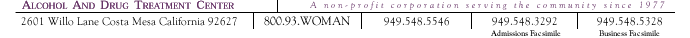

|
|
No two women are alike. And
at NDFW, no two women receive exactly the same treatment
program.
Since our inception
in 1977, NDFW has expanded our alcohol-treatment services
to include a comprehensive array of chemical dependency
treatment programs. From the primary program, to intermediate
living, to aftercare, we tailor the treatment each
woman receives to her individual needs. In addition
to our basic 90-day program, we offer a number of
supplemental program services for the women we treat,
as well as their families. These programs include
work search assistance, ongoing clinical assessments
for relapse prevention, and family support groups.
| |
Treatment
and Recovery Programs
- 30-day primary treatment
in a residential setting
- Introduction to 12-step
support groups
- Individual and group
counseling
- Family counseling
and support
- Work search and intermediate
living
- Aftercare, including
weekly support groups
- Outpatient treatment.
|
|
|
|
|
|
|  |
|